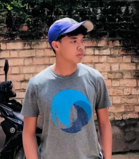
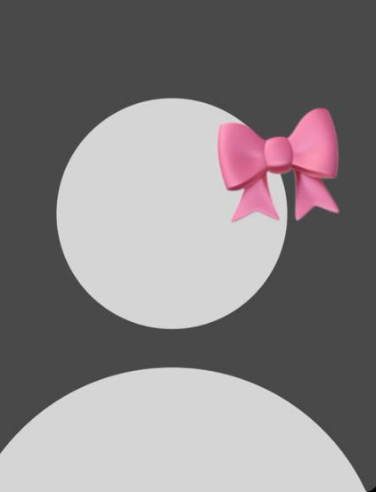

Rakoto Andry est un peintre malagasy spécialisé dans les paysages, les baobabs et les scènes de la vie quotidienne.

Elle crée des sculptures en bois inspirées des traditions et de la nature malagasy.
Artisan reconnu pour ses créations en raphia et ses objets décoratifs fabriqués à la main.